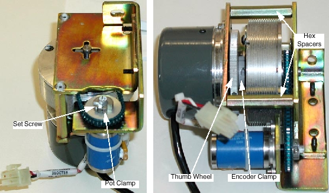
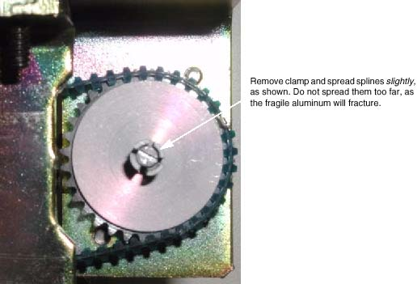
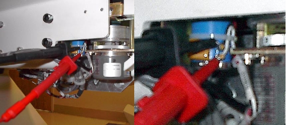
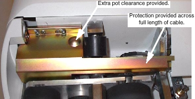

Proprietary to General Electric
Direction 5114045-800, Rev# 10
LightSpeed 4.X Service Information (Advanced)
Proprietary to General Electric |
| Required Persons | Preliminary Reqs | Procedure | Finalization |
|---|---|---|---|
| 1 |
Purpose: The purpose of the longitudinal encoder assembly adjustment is to set the encoder C-Pulse and the cradle pot to 0.8v at the cradle home position. This allows for the potentiometer to read safely across its available mechanical range during winding/unwinding of the encoder cable. If allowed to exceed its mechanical limits, the potentiometer will operate nonlinearly on an intermittent basis. This will cause cradle potentiometer/encoder mismatch errors. The factory replacement assemblies will arrive with:
an initial three turns of pre-load spring tension applied,
all of the cable wire wound on the take up spool, and
the cable eyelet anchored to the hex spacer.
| Item | Qty | Effectivity | Part# | Manufacturer | |
|---|---|---|---|---|---|
| Standard FE Tool Kit | 1 | - | - | - | |
| Digital Multimeter | 1 | - | - | - | |
| Item | Qty | Effectivity | Part# | Manufacturer |
|---|---|---|---|---|
| Ty-rap | 1 | - | - | - |
| Item | Qty | Effectivity | Part# | Manufacturer | |
|---|---|---|---|---|---|
| Longitudinal Encoder Assembly | 1 | - | - | - | |
Refer to Illustration 1. Loosen the replacement encoder potentiometer’s clamp and the encoder’s clamp.
Illustration 1: Replacement Encoder Assembly Prep.

Remove the potentiometer clamp, and, using a small flat blade screwdriver, carefully spread the pulley’s clamping splines. Do not spread them too far (see Illustration 2) as the fragile aluminum will fracture. Work to break the hold of the white glyptol and to provide a little extra clearance around the pot shaft.
Illustration 2: Spread Pot Pulley Splines.

Do not reinstall the clamp.
Using a DMM, measure resistance between pins 2 and 1 (GND). This is where the capacitor is soldered.
Using a small flat blade screwdriver, adjust the pot to approximately 5K Ohms.
Set aside the new assembly.
Raise the table to maximum height.
Turn off the table breaker in the PDU, to remove power from the entire table.
Remove the right table side covers (see Table Side Covers Removal and Re-install) and cradle drive cover to access the cal pin (located in the bottom of the right z-channel, beneath the Cradle Drive Cover).
Remove the cradle assembly (see Cradle Assembly Replacement) and the right side rail cover.
Remove the two lock nuts that fasten the longitudinal encoder assembly cover in place.
Remove the two screws that fasten the front end cover in place.
Grasp the carriage with one hand, while manually unlatching the carriage with the other hand.
Slowly move the carriage assembly toward the gantry until it rests against the bumper stop.
| Releasing the cradle carriage assembly before it rests against the bumper stop will damage the longitudinal encoder assembly. | |
Detach and store the stranded steel cable from the carriage by:
Firmly holding the eyelet on the encoder cable,
removing the shoulder screw and spacer from the carriage, and
easing the cable forward until in a position to ty-wrap it to the hex spacer.
| Maintain at least 2 pounds of tension on the cable. If tension is released and spool is allowed to unwind, the encoder assembly will be damaged. | |
Fasten the eyelet to the hex spacer with a ty-rap, to maintain the initial three turns of pre-load on the spool.
Locate the right z-channel:
Unplug the encoder J16 connector from the table harness.
Unplug the pot connection at J17.
Remove the two screws that fasten the encoder assembly to the table.
Remove the defective longitudinal encoder assembly.
When installing the replacement encoder assembly:
Ensure that the cable maintains the initial three turns of pre-load tension on the spool.
Factory replacement assemblies arrive with the initial three turns of pre-load applied and the eyelet anchored to the hex spacer.
Do not reinstall the pot sprocket clamp at this time.
Connect J16 and J17.
Attach a DMM to terminals #2 and #1 (GND) of the pot (see Illustration 3) and measure the resistance between these two points. The value should be approximately 5K Ohms. If it is not, adjust the pot shaft to produce this reading.
Illustration 3: Attach DMM to pins 2 and 1 (GND)

| At no time should the pot resistance drop below 0 Ohms during this installation. | |
Position the DMM in such a way as to make the displayed resistance value visible throughout the remainder of this procedure.
Fasten the cable to the carriage with the shoulder screw and spacer.
While observing the read out on the DMM, slowly move the carriage to the home position, then install and tighten the Cal pin to fasten the carriage in place.
| At no time should the pot resistance drop below 0 Ohms during this installation. | |
Switch your DMM to voltage measurement.
Turn on the table breaker in the PDU to restore power.
Using a small pair of needle nose pliers, carefully squeeze the splines on the pot pulley to allow the clamp to easily slip over the splines.
Reinstall the clamp such that proper access exists to the set screw. Do not tighten.
Adjust the pot:
If not already in place, attach a DMM to terminals 2 and 1 (GND) of the pot.
Turn the pot shaft with a small screwdriver until the DMM displays 0.80 ±0.01 VDC.
Maintain the voltage displayed while tightening the pot clamp.
Do not remove the DMM at this time.
Adjust the C-Pulse:
If not already done, loosen the clamp that fastens the cable spool to the encoder shaft.
Turn the encoder thumb-wheel to light the C-pulse LED on the ETC PWA.
Tighten the clamp and verify the C-pulse LED remains lit.
Check for increase in pot voltage:
Hold the carriage assembly in position with one hand, while you remove the cal pin with the other hand.
Continue to hold onto the carriage assembly while manually releasing the home position latch.
Move the carriage towards the gantry and observe that the pot voltage increases.
| The pot will be damaged if moved beyond the 0 VDC point. | |
Return the carriage to the home position and lock it in place.
Reinstall the encoder cover, front end cover, and the cradle.
Characterize the longitudinal axis.
Store the cal pin (in the bottom of the right z-channel, beneath the Cradle Drive Cover), reassemble the table, and replace the covers.
Two encoder covers currently exist in the field. That shown in Illustration 4 is what is currently on most installed base tables. This cover has two main inadequacies that often lead to premature failure of the encoder assembly it is intended to protect:
The encoder cable is unprotected from the point of exit from the cover to the beginning of the table’s Z-channel. This makes it susceptible to the introduction of customer obstructions like blankets and patient straps.
The cover does not allow for sufficient clearance for the potentiometer. Excessive friction with the cover will cause the pot value to vary resulting in intermittent, or even hard, cradle potentiometer/encoder mismatch errors.
Illustration 4: Old Encoder Cover

These issues, identified and addressed with a Six Sigma project, were resolved with a new cover as shown in Illustration 5.
Illustration 5: New Encoder Cover: 2261675

It is highly recommended that the field order and replace any of the old style covers present on installed base systems. These new covers were cut into forward production with the advent of the LCC table. All applicable systems should have this cover installed.
Characterize Longitudinal.
Perform System Scanning Test.